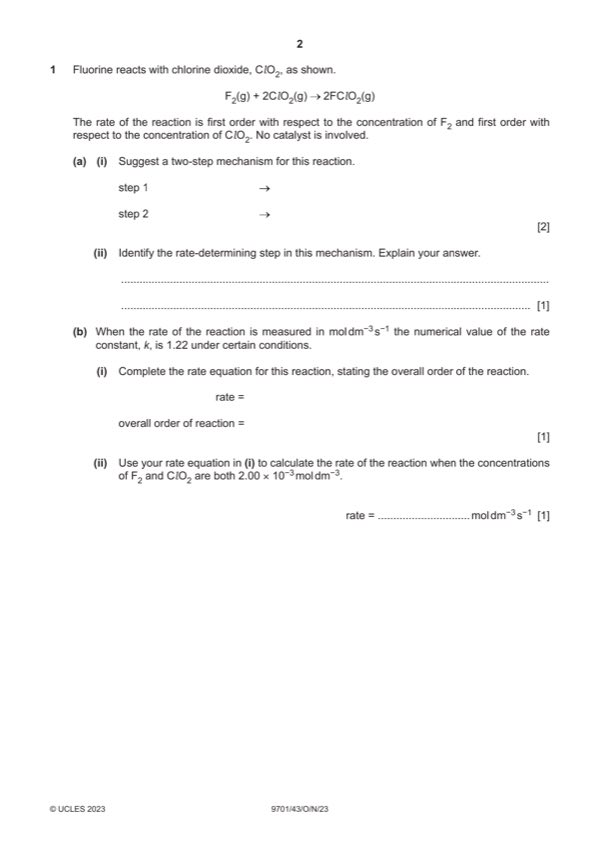

Question 1

Original paper page 2
Part 1(a)(i) — solution
Answer: OR
- [M1] F2 + ClO2 → FClO2 + F [1] 2
- [M2] ClO2 + F → FClO2 [1]
- [M1] F2 + ClO2 → F2ClO2
- [M2] F2ClO2 + ClO2 → 2FClO2
Mark points
- [M1] F2 + ClO2 → FClO2 + F [1] 2
- [M2] ClO2 + F → FClO2 [1]
- [M1] F2 + ClO2 → F2ClO2
- [M2] F2ClO2 + ClO2 → 2FClO2
Part 1(a)(ii) — solution
Answer: OR same moles of reactants as orders in rate equation
first step AND 1
has one mole / molecule of F2 and ClO2 [1]
OR same moles of reactants as orders in rate equation
Mark points
- Correct result: OR same moles of reactants as orders in rate equation
Part 1(b)(i) — solution
Answer: AND second / 2 BOTH[1]
- rate = k [F2][Cl O2] / rate = 1.22 [F2][Cl O2] 1
Mark points
- rate = k [F2][Cl O2] / rate = 1.22 [F2][Cl O2] 1
Part 1(b)(ii) — solution
- rate = 1.22 2 10-3 2 10-3 = 4.88 x 10-6 [1] 1
Mark points
- rate = 1.22 2 10-3 2 10-3 = 4.88 x 10-6 [1] 1
Part 1(c)(i) — solution
- k1 = (0.693 / 4) = 0.173 OR 1.73 10–1[1] 2
Mark points
- k1 = (0.693 / 4) = 0.173 OR 1.73 10–1[1] 2
Part 1(c)(ii) — solution
- at 4 s = 0.001 1
- at 8 s = 0.0005
- at 12 s = 0.00025
Mark points
- at 4 s = 0.001 1
- at 8 s = 0.0005
- at 12 s = 0.00025
Part 1(c)(iii) — solution
Answer: AND
- gradient dependent on their rate = Y / X in the range = 1.5–2.0 10–4 [1]
Mark points
- gradient dependent on their rate = Y / X in the range = 1.5–2.0 10–4 [1]